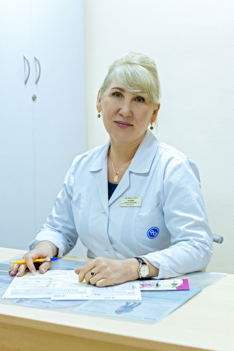
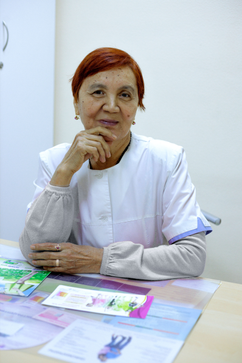
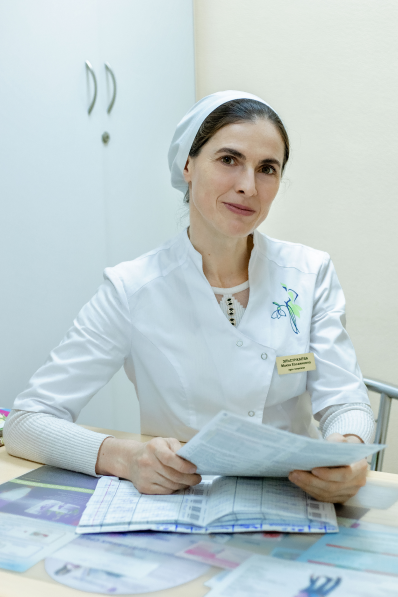

Наши Врачи

Курцева Наталья Николаевна
Стаж работы 25 лет
- Образование :
- 1994 гг. Астраханский государственный медицинский
институт им А.В. Луначарского. Присвоена квалификация врача по
специальности «Лечебное дело» - 1994-1995 г. Клиническая интернатура Астраханская государственная
мед академия по специальности «Акушерство и гинекология» )
- Повышение квалификации :
- 1999 г. Повышение квалификации на ФПО Астраханская Медакадемия
по теме «Неотложная помощь в акушерстве и гинекологии».
Прошла стажировку на базе областной клинической больницы № 1 - 2004 г. Проходила специализацию
на ФПО Астраханская Медакадемия по теме
«Неотложная помощь в акушерстве и гинекологии» - 2014 г. Повышение квалификации
в ГБОУ ВПОАГМА Минздрава циклу Ту России
«Неотложная помощь в акушерстве и гинекологии». - 2014 г. Повышение квалификации в ФГБОУ ВО
Астраханский ГМУ Минздрава России на цикле
«Клиническое акушерство и антенатальная охрана плода»

Аблязова Х.Р
Стаж работы 50 лет
- Образование :
- 1972-1978 гг. Астраханский государственный медицинский институт им
А.В. Луначарского. Присвоена квалификация врача по специальности
«Лечебный факультет по специальности « Акушер - гинеколог » - 1978-1979 г. Клиническая интернатура г Зеленодольск ТАССР
Казанский мед институт им. С.В. Курашова.
- Повышение квалификации :
- 1985 г. Повышение квалификации г. Иркутск цикл
«Антенатальная охрана плода». - 1996 г. Проходила цикл в ОКБ № 1 г. Астрахань
«Актуальные вопросы в акушерстве и гинекологии. Организация
акушерско-гинекологической помощи» - 2000 г. Проходила цикл в ОКБ № 1 г. Астрахань
«Клиническое акушерство и антенатальная охрана плода » - 2006 г. Повышение квалификации ФИО АГМА г. Астрахань
«Клиническое акушерство и антенатальная охрана плода». - 2011 г. Повышение квалификации на кафедре АГМА г. Астрахань
«Актуальные вопросы акушерства и гинекологии. Антенатальная
охрана плода». Выдан сертификат А № 0921963 решение
экзаменационной комиссии при Астраханской мед академии присвоена
специальность « Акушерство и гинекология. Присвоена категория 2/1.

Эльсункаева Макка Хасаиновна
Стаж работы 8 лет.
- Образование :
-
2006г – 2012 гг. Астраханская государственная медицинская академия.
Присвоена квалификация врача по специальности «Педиатрия»)
(диплом КП рег. № 5201 от 23.06. 2012 г.) - 2012 – 2013 гг. Клиническая интернатура по специальности
«Акушерство и гинекология» на базе ГБОУ ВПО АГМА Минздрава РФ,
г. Астрахань (удостоверение врача акушера-гинеколога рег.
№ 825 от 10.06.2019 г.) - 2015 г. Первичная специализация по специальности «Ультразвуковая
диагностика» на базе ГБОУ ВПО АГМА Минздрава РФ, г. Астрахань
(диплом о профессиональной переподготовке )
- Повышение квалификации :
- 2016 г. Участие в областной научно-практической конференции
«Междисциплинарные вопросы женского здоровья», г. Астрахань. - 2017г. Участие в научно-практической конференции
«Актуальные вопросы охраны здоровья матери и ребенка», г.Астрахань - 2018г. Участие в региональной научно-практической конференции
«Проблемы репродукции: от зачатия до успешного родоразрешения».
Мастер-класс (шейка матки, генитальные инфекции, гормоны.
Особенности кольпоскопии) - 2019 г. Повышение квалификации по теме « Актуальные вопросы
акушерства и гинекологии». Итоговая работа на тему « Маточные
кровотечения второй половины беременности». - 2019 г. Участие в IV Международной конференции Прикаспийских
государств («Актуальные вопросы современной медицины»).
Секция «Актуальные вопросы акушерства и гинекологии».